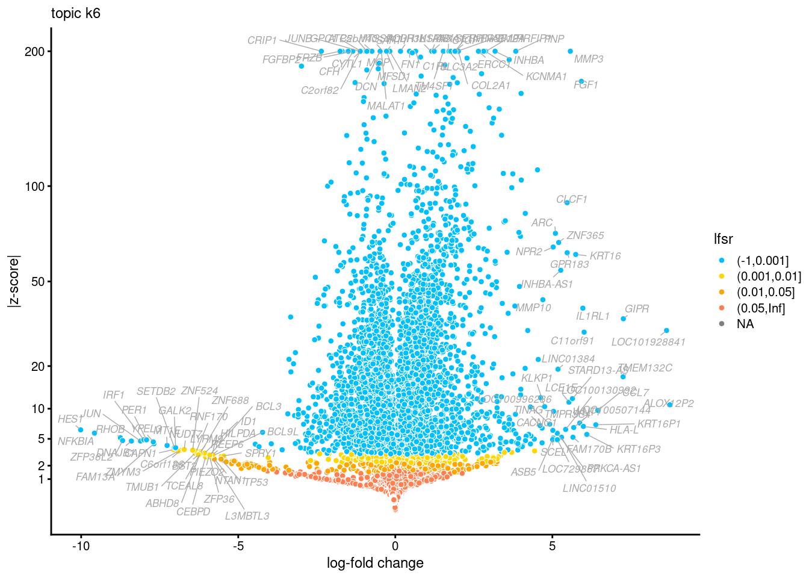

Fitting and interpreting topic model with external data
Anthony Hung
2021-01-19
Last updated: 2021-12-14
Checks: 6 1
Knit directory: invitroOA_pilot_repository/
This reproducible R Markdown analysis was created with workflowr (version 1.6.2). The Checks tab describes the reproducibility checks that were applied when the results were created. The Past versions tab lists the development history.
The R Markdown file has unstaged changes. To know which version of the R Markdown file created these results, you’ll want to first commit it to the Git repo. If you’re still working on the analysis, you can ignore this warning. When you’re finished, you can run wflow_publish to commit the R Markdown file and build the HTML.
Great job! The global environment was empty. Objects defined in the global environment can affect the analysis in your R Markdown file in unknown ways. For reproduciblity it’s best to always run the code in an empty environment.
The command set.seed(20210119) was run prior to running the code in the R Markdown file. Setting a seed ensures that any results that rely on randomness, e.g. subsampling or permutations, are reproducible.
Great job! Recording the operating system, R version, and package versions is critical for reproducibility.
Nice! There were no cached chunks for this analysis, so you can be confident that you successfully produced the results during this run.
Great job! Using relative paths to the files within your workflowr project makes it easier to run your code on other machines.
Great! You are using Git for version control. Tracking code development and connecting the code version to the results is critical for reproducibility.
The results in this page were generated with repository version 0054a6e. See the Past versions tab to see a history of the changes made to the R Markdown and HTML files.
Note that you need to be careful to ensure that all relevant files for the analysis have been committed to Git prior to generating the results (you can use wflow_publish or wflow_git_commit). workflowr only checks the R Markdown file, but you know if there are other scripts or data files that it depends on. Below is the status of the Git repository when the results were generated:
Ignored files:
Ignored: .Rhistory
Ignored: .Rproj.user/
Ignored: code/.DS_Store
Ignored: code/bulkRNA_preprocessing/.snakemake/conda-archive/
Ignored: code/bulkRNA_preprocessing/.snakemake/conda/
Ignored: code/bulkRNA_preprocessing/.snakemake/locks/
Ignored: code/bulkRNA_preprocessing/.snakemake/shadow/
Ignored: code/bulkRNA_preprocessing/.snakemake/singularity/
Ignored: code/bulkRNA_preprocessing/.snakemake/tmp.3ekfs3n5/
Ignored: code/bulkRNA_preprocessing/fastq/
Ignored: code/bulkRNA_preprocessing/out/
Ignored: code/single_cell_preprocessing/.snakemake/conda-archive/
Ignored: code/single_cell_preprocessing/.snakemake/conda/
Ignored: code/single_cell_preprocessing/.snakemake/locks/
Ignored: code/single_cell_preprocessing/.snakemake/shadow/
Ignored: code/single_cell_preprocessing/.snakemake/singularity/
Ignored: code/single_cell_preprocessing/YG-AH-2S-ANT-1_S1_L008/
Ignored: code/single_cell_preprocessing/YG-AH-2S-ANT-2_S2_L008/
Ignored: code/single_cell_preprocessing/demuxlet/.DS_Store
Ignored: code/single_cell_preprocessing/fastq/
Ignored: data/external_scRNA/Chou_et_al2020/
Ignored: data/external_scRNA/Jietal2018/
Ignored: data/external_scRNA/Wuetal2021/
Ignored: data/external_scRNA/merged_external_scRNA.rds
Ignored: data/poweranalysis/alasoo_et_al/
Ignored: output/DEresults_k=6.rds
Ignored: output/DEresults_k=7.rds
Ignored: output/DEresults_k=8.rds
Ignored: output/GO_terms_enriched.csv
Ignored: output/topicModel_k=6.rds
Ignored: output/topicModel_k=7.rds
Ignored: output/topicModel_k=8.rds
Ignored: output/voom_results.rds
Unstaged changes:
Modified: .gitignore
Deleted: analysis/figure/topicModel_scRNA_newDE.Rmd/DE-1.png
Deleted: analysis/figure/topicModel_scRNA_newDE.Rmd/fit topic model k6-1.png
Deleted: analysis/figure/topicModel_scRNA_newDE.Rmd/fit topic model k6-2.png
Deleted: analysis/figure/topicModel_scRNA_newDE.Rmd/fit topic model k8-1.png
Deleted: analysis/figure/topicModel_scRNA_newDE.Rmd/fit topic model k8-2.png
Deleted: analysis/figure/topicModel_scRNA_newDE.Rmd/plot correlations external-1.png
Deleted: analysis/figure/topicModel_scRNA_newDE.Rmd/structure plot external-1.png
Modified: analysis/topicModel_scRNA_newDE.Rmd
Deleted: fig-limma-treatment-hit-1.eps
Note that any generated files, e.g. HTML, png, CSS, etc., are not included in this status report because it is ok for generated content to have uncommitted changes.
These are the previous versions of the repository in which changes were made to the R Markdown (analysis/topicModel_scRNA_newDE.Rmd) and HTML (docs/topicModel_scRNA_newDE.html) files. If you’ve configured a remote Git repository (see ?wflow_git_remote), click on the hyperlinks in the table below to view the files as they were in that past version.
| File | Version | Author | Date | Message |
|---|---|---|---|---|
| Rmd | 0054a6e | Anthony Hung | 2021-12-13 | Add volcano plots to new DE |
| Rmd | b281874 | Anthony Hung | 2021-12-09 | add test for new DE fasttopics |
Introduction
This code will load in the combined scRNA seq data from external datasets combined with the iPSC-chondrocytes from the current study and fit a topic model (k=7) to the data. It then interprets the topics.
Load data and packages
The merged data were created by running the code located in Aggregation of external scRNA-seq data for topic model.
library(fastTopics)
library(Seurat)Registered S3 method overwritten by 'shiny':
method from
print.key_missing fastmaplibrary(Matrix)
library(cowplot)
#load data (stored in a seurat object)
merged_data <- readRDS("data/external_scRNA/merged_external_scRNA.rds")
#Extract raw count matrix from seurat object and get it in correct format for fastTopics
#need to fit the model to the count data (unintegrated)
raw_counts <- merged_data@assays$RNA@counts
#remove genes without any counts in droplets
raw_counts <- raw_counts[rowSums(raw_counts > 0) > 0,]
#get into correct orientation (barcodes x features)
raw_counts <- t(raw_counts)
dim(raw_counts)[1] 33218 36470Use fastTopics functions to fit a topic model k=7 to the data
if (file.exists("output/topicModel_k=7.rds")) {
fit <- readRDS("output/topicModel_k=7.rds")
} else {
fit <- fit_poisson_nmf(raw_counts,k = 7,numiter = 150)
saveRDS(fit, "output/topicModel_k=7.rds")
}
#compute weights and topics (rescale each of l and f to add up to 1)
l <- fit$L
f <- fit$F
weights <- sweep(l, MARGIN = 2, colSums(f), `*`)
scale <- rowSums(weights)
weights <- weights / scale
topics <- f / colSums(f) # add up to 1Heatmap
Here we select a few marker genes to represent iPSCs, MSCs, Hepatocytes, and Chondrocytes and visualize the relative loadings of these marker genes in each of the 7 fitted topics using a scaled heatmap.
library(stringr)
library(pheatmap)
library(dummies)dummies-1.5.6 provided by Decision Patternslibrary(tidyverse)Registered S3 method overwritten by 'cli':
method from
print.boxx spatstat── Attaching packages ────────────────────────────────── tidyverse 1.3.0 ──✓ ggplot2 3.3.5 ✓ purrr 0.3.4
✓ tibble 3.1.6 ✓ dplyr 1.0.7
✓ tidyr 1.1.4 ✓ forcats 0.4.0
✓ readr 1.3.1 ── Conflicts ───────────────────────────────────── tidyverse_conflicts() ──
x tidyr::expand() masks Matrix::expand()
x dplyr::filter() masks stats::filter()
x dplyr::lag() masks stats::lag()
x tidyr::pack() masks Matrix::pack()
x tidyr::unpack() masks Matrix::unpack()#selected markers for different cell types
MSC_markers <- c("THY1", "NT5E", "ENG")
Chondrocyte_markers <- c("COL2A1", "ACAN", "SOX9", "SOX5", "SOX6", "COL9A1")
Hepatocyte_markers <- c("ALB")
iPSC_markers <- c("POU5F1", "SOX2", "NANOG")
markers <- c(iPSC_markers, Hepatocyte_markers, Chondrocyte_markers, MSC_markers)
#annotate the markers with the cell type they represent
markers_description <- data.frame(marker_type = c(rep("iPSC", 3), rep("Hepatocyte", 1), rep("Chondrocyte", 6), rep("MSC", 3)))
rownames(markers_description) <- markers
#plot heatmap of relative expression of marker genes in each topic
topics_markers <- topics[markers,]
pheatmap(topics_markers, cluster_cols = FALSE, cluster_rows = FALSE, annotation_row = markers_description, scale = "row")
Structure Plot
The structure plot represents the topic membership proportions of individual cells in each of the cell types using stacked bar plots.
#get labels of cells (cell type) and reorder to group them
sample <- as.data.frame(merged_data@meta.data$Cell.Type)
sample_labels <- sample %>%
dplyr::transmute(Cell.Type = stringr::word(`merged_data@meta.data$Cell.Type`, start = 1))
rownames(sample_labels) <- rownames(merged_data@meta.data)
sample <- sample_labels %>%
dplyr::arrange(Cell.Type)
set.seed(1)
topic_colors <- c("gold", "grey", "firebrick", "forestgreen", "royalblue", "turquoise", "salmon")
topics_order <- c(2, 3, 1, 7, 5, 4, 6)
rows_keep <- sort(c(sample(which(sample_labels$Cell.Type == "Hepatocyte"), 800),
sample(which(sample_labels$Cell.Type == "iPSC"), 800),
sample(which(sample_labels$Cell.Type == "iPSC-MSC"), 800),
which(sample_labels$Cell.Type == "iPSC-Chondrocyte"),
sample(which(sample_labels$Cell.Type == "iPSC-Chondro_GAH"), 800),
sample(which(sample_labels$Cell.Type == "iPSC-Osteo"), 800),
sample(which(sample_labels$Cell.Type == "Wu_chondrogenic_pellet_d7"), 800),
sample(which(sample_labels$Cell.Type == "Wu_chondrogenic_pellet_d14"), 800),
sample(which(sample_labels$Cell.Type == "Wu_chondrogenic_pellet_d28"), 800),
sample(which(sample_labels$Cell.Type == "Wu_chondrogenic_pellet_d42"), 800),
sample(which(sample_labels$Cell.Type == "chou_chondrocyte"), 800),
sample(which(sample_labels$Cell.Type == "ji_chondrocyte"), 800)))
structure_plot <- structure_plot(select(poisson2multinom(fit),loadings = rows_keep),
grouping = factor(sample_labels[rows_keep,"Cell.Type"],
c("Hepatocyte", "iPSC", "iPSC-MSC",
"iPSC-Osteo", "iPSC-Chondro_GAH",
"iPSC-Chondrocyte", "Wu_chondrogenic_pellet_d7", "Wu_chondrogenic_pellet_d14", "Wu_chondrogenic_pellet_d28", "Wu_chondrogenic_pellet_d42", "chou_chondrocyte", "ji_chondrocyte")),
topics = topics_order,
colors = topic_colors[topics_order],
perplexity = c(50),
n = 6043,gap = 100,num_threads = 4,verbose = FALSE)Running tsne on 447 x 7 matrix.Running tsne on 475 x 7 matrix.Running tsne on 450 x 7 matrix.Running tsne on 489 x 7 matrix.Running tsne on 467 x 7 matrix.Running tsne on 1037 x 7 matrix.Running tsne on 450 x 7 matrix.Running tsne on 443 x 7 matrix.Running tsne on 452 x 7 matrix.Running tsne on 436 x 7 matrix.Running tsne on 447 x 7 matrix.Running tsne on 450 x 7 matrix.print(structure_plot)
Differential Expression analysis
First, calculate differential occurrence of genes in individual topics vs all other topics.
if (file.exists("output/DEresults_k=7.rds")) {
diff_count_topics_k7 <- readRDS("output/DEresults_k=7.rds")
} else {
diff_count_topics_k7 <- de_analysis(fit,
raw_counts,
pseudocount = 0.1,
control = list(ns = 1e4, nc = 20, nsplit = 1000)
) #runs using 20 cores, 10,000 simulations
saveRDS(diff_count_topics_k7, file = "output/DEresults_k=7.rds")
}
#volcano plots
genes <- rownames(fit$F)
p1 <- volcano_plot(diff_count_topics_k7,k = "k1",ymax = 300,labels = genes)
p2 <- volcano_plot(diff_count_topics_k7,k = "k2",ymax = 175,labels = genes)
p3 <- volcano_plot(diff_count_topics_k7,k = "k3",ymax = 150,labels = genes)
p4 <- volcano_plot(diff_count_topics_k7,k = "k4",ymax = 175,labels = genes)
p5 <- volcano_plot(diff_count_topics_k7,k = "k5",ymax = 175,labels = genes)
p6 <- volcano_plot(diff_count_topics_k7,k = "k6",ymax = 200,labels = genes)
p7 <- volcano_plot(diff_count_topics_k7,k = "k7",ymax = 200,labels = genes)
p1p2p3p4p5p6
p7
For Supplement: Fit Topic models with k = 6 and k = 8 and plot a Structure plot in each case
if (file.exists("output/topicModel_k=6.rds")) {
fit <- readRDS("output/topicModel_k=6.rds")
} else {
fit <- fit_poisson_nmf(raw_counts,k = 6,numiter = 100)
saveRDS(fit, "output/topicModel_k=6.rds")
}
#compute weights and topics (rescale each of l and f to add up to 1)
l <- fit$L
f <- fit$F
weights <- sweep(l, MARGIN = 2, colSums(f), `*`)
scale <- rowSums(weights)
weights <- weights / scale
topics <- f / colSums(f) # add up to 1
#get labels of cells (cell type) and reorder to group them
sample <- as.data.frame(merged_data@meta.data$Cell.Type)
sample_labels <- sample %>%
dplyr::transmute(Cell.Type = stringr::word(`merged_data@meta.data$Cell.Type`, start = 1))
rownames(sample_labels) <- rownames(merged_data@meta.data)
sample <- sample_labels %>%
dplyr::arrange(Cell.Type)
set.seed(1)
topic_colors <- c("turquoise", "firebrick", "grey", "salmon", "royalblue", "forestgreen")
topics_order <- c(3, 2, 4, 6, 5, 1)
rows_keep <- sort(c(sample(which(sample_labels$Cell.Type == "Hepatocyte"), 800),
sample(which(sample_labels$Cell.Type == "iPSC"), 800),
sample(which(sample_labels$Cell.Type == "iPSC-MSC"), 800),
which(sample_labels$Cell.Type == "iPSC-Chondrocyte"),
sample(which(sample_labels$Cell.Type == "iPSC-Chondro_GAH"), 800),
sample(which(sample_labels$Cell.Type == "iPSC-Osteo"), 800),
sample(which(sample_labels$Cell.Type == "Wu_chondrogenic_pellet_d7"), 800),
sample(which(sample_labels$Cell.Type == "Wu_chondrogenic_pellet_d14"), 800),
sample(which(sample_labels$Cell.Type == "Wu_chondrogenic_pellet_d28"), 800),
sample(which(sample_labels$Cell.Type == "Wu_chondrogenic_pellet_d42"), 800),
sample(which(sample_labels$Cell.Type == "chou_chondrocyte"), 800),
sample(which(sample_labels$Cell.Type == "ji_chondrocyte"), 800)))
structure_plot <- structure_plot(select(poisson2multinom(fit),loadings = rows_keep),
grouping = factor(sample_labels[rows_keep,"Cell.Type"],
c("Hepatocyte", "iPSC", "iPSC-MSC", "iPSC-Osteo",
"iPSC-Chondro_GAH", "iPSC-Chondrocyte", "Wu_chondrogenic_pellet_d7", "Wu_chondrogenic_pellet_d14", "Wu_chondrogenic_pellet_d28", "Wu_chondrogenic_pellet_d42", "chou_chondrocyte", "ji_chondrocyte")),
topics = topics_order,
colors = topic_colors[topics_order],
perplexity = c(50),
n = 6043,gap = 100,num_threads = 4,verbose = FALSE)Running tsne on 447 x 6 matrix.Running tsne on 475 x 6 matrix.Running tsne on 450 x 6 matrix.Running tsne on 489 x 6 matrix.Running tsne on 467 x 6 matrix.Running tsne on 1037 x 6 matrix.Running tsne on 450 x 6 matrix.Running tsne on 443 x 6 matrix.Running tsne on 452 x 6 matrix.Running tsne on 436 x 6 matrix.Running tsne on 447 x 6 matrix.Running tsne on 450 x 6 matrix.print(structure_plot)
if (file.exists("output/DEresults_k=8.rds")) {
diff_count_topics_k6 <- readRDS("output/DEresults_k=6.rds")
} else {
diff_count_topics_k6 <- de_analysis(fit,
raw_counts,
pseudocount = 0.1,
control = list(ns = 1e4, nc = 20, nsplit = 1000)
) #runs using 20 cores, 10,000 simulations
saveRDS(diff_count_topics_k6, file = "output/DEresults_k=6.rds")
}
#volcano plots
genes <- rownames(fit$F)
p1 <- volcano_plot(diff_count_topics_k6,k = "k1",ymax = 300,labels = genes)
p2 <- volcano_plot(diff_count_topics_k6,k = "k2",ymax = 175,labels = genes)
p3 <- volcano_plot(diff_count_topics_k6,k = "k3",ymax = 150,labels = genes)
p4 <- volcano_plot(diff_count_topics_k6,k = "k4",ymax = 175,labels = genes)
p5 <- volcano_plot(diff_count_topics_k6,k = "k5",ymax = 175,labels = genes)
p6 <- volcano_plot(diff_count_topics_k6,k = "k6",ymax = 200,labels = genes)
p1
p2
p3
p4
p5
p6
if (file.exists("output/topicModel_k=8.rds")) {
fit <- readRDS("output/topicModel_k=8.rds")
} else {
fit <- fit_poisson_nmf(raw_counts,k = 8,numiter = 150)
saveRDS(fit, "output/topicModel_k=8.rds")
}
#compute weights and topics (rescale each of l and f to add up to 1)
l <- fit$L
f <- fit$F
weights <- sweep(l, MARGIN = 2, colSums(f), `*`)
scale <- rowSums(weights)
weights <- weights / scale
topics <- f / colSums(f) # add up to 1
#get labels of cells (cell type) and reorder to group them
sample <- as.data.frame(merged_data@meta.data$Cell.Type)
sample_labels <- sample %>%
dplyr::transmute(Cell.Type = stringr::word(`merged_data@meta.data$Cell.Type`, start = 1))
rownames(sample_labels) <- rownames(merged_data@meta.data)
sample <- sample_labels %>%
dplyr::arrange(Cell.Type)
set.seed(1)
topic_colors <- c("royalblue", "turquoise","firebrick","gold","grey", "black", "salmon", "forestgreen")
topics_order <- c(5, 3, 4, 7, 6, 1, 8, 2)
rows_keep <- sort(c(sample(which(sample_labels$Cell.Type == "Hepatocyte"), 800),
sample(which(sample_labels$Cell.Type == "iPSC"), 800),
sample(which(sample_labels$Cell.Type == "iPSC-MSC"), 800),
which(sample_labels$Cell.Type == "iPSC-Chondrocyte"),
sample(which(sample_labels$Cell.Type == "iPSC-Chondro_GAH"), 800),
sample(which(sample_labels$Cell.Type == "iPSC-Osteo"), 800),
sample(which(sample_labels$Cell.Type == "Wu_chondrogenic_pellet_d7"), 800),
sample(which(sample_labels$Cell.Type == "Wu_chondrogenic_pellet_d14"), 800),
sample(which(sample_labels$Cell.Type == "Wu_chondrogenic_pellet_d28"), 800),
sample(which(sample_labels$Cell.Type == "Wu_chondrogenic_pellet_d42"), 800),
sample(which(sample_labels$Cell.Type == "chou_chondrocyte"), 800),
sample(which(sample_labels$Cell.Type == "ji_chondrocyte"), 800)))
structure_plot <- structure_plot(select(poisson2multinom(fit),loadings = rows_keep),
grouping = factor(sample_labels[rows_keep,"Cell.Type"],
c("Hepatocyte", "iPSC", "iPSC-MSC", "iPSC-Osteo",
"iPSC-Chondro_GAH", "iPSC-Chondrocyte", "Wu_chondrogenic_pellet_d7", "Wu_chondrogenic_pellet_d14", "Wu_chondrogenic_pellet_d28", "Wu_chondrogenic_pellet_d42", "chou_chondrocyte", "ji_chondrocyte")),
topics = topics_order,
colors = topic_colors[topics_order],
perplexity = c(50),
n = 6043,gap = 100,num_threads = 4,verbose = FALSE)Running tsne on 447 x 8 matrix.Running tsne on 475 x 8 matrix.Running tsne on 450 x 8 matrix.Running tsne on 489 x 8 matrix.Running tsne on 467 x 8 matrix.Running tsne on 1037 x 8 matrix.Running tsne on 450 x 8 matrix.Running tsne on 443 x 8 matrix.Running tsne on 452 x 8 matrix.Running tsne on 436 x 8 matrix.Running tsne on 447 x 8 matrix.Running tsne on 450 x 8 matrix.print(structure_plot)
if (file.exists("output/DEresults_k=8.rds")) {
diff_count_topics_k8 <- readRDS("output/DEresults_k=8.rds")
} else {
diff_count_topics_k8 <- de_analysis(fit,
raw_counts,
pseudocount = 0.1,
control = list(ns = 1e4, nc = 20, nsplit = 1000)
) #runs using 20 cores, 10,000 simulations
saveRDS(diff_count_topics_k8, file = "output/DEresults_k=8.rds")
}
#volcano plots
genes <- rownames(fit$F)
p1 <- volcano_plot(diff_count_topics_k8,k = "k1",ymax = 300,labels = genes)
p2 <- volcano_plot(diff_count_topics_k8,k = "k2",ymax = 175,labels = genes)
p3 <- volcano_plot(diff_count_topics_k8,k = "k3",ymax = 150,labels = genes)
p4 <- volcano_plot(diff_count_topics_k8,k = "k4",ymax = 175,labels = genes)
p5 <- volcano_plot(diff_count_topics_k8,k = "k5",ymax = 175,labels = genes)
p6 <- volcano_plot(diff_count_topics_k8,k = "k6",ymax = 200,labels = genes)
p7 <- volcano_plot(diff_count_topics_k8,k = "k7",ymax = 200,labels = genes)
p8 <- volcano_plot(diff_count_topics_k8,k = "k8",ymax = 200,labels = genes)
p1
p2
p3
p4
p5
p6
p7
p8
sessionInfo()R version 3.6.1 (2019-07-05)
Platform: x86_64-pc-linux-gnu (64-bit)
Running under: Scientific Linux 7.4 (Nitrogen)
Matrix products: default
BLAS/LAPACK: /software/openblas-0.2.19-el7-x86_64/lib/libopenblas_haswellp-r0.2.19.so
locale:
[1] LC_CTYPE=en_US.UTF-8 LC_NUMERIC=C
[3] LC_TIME=en_US.UTF-8 LC_COLLATE=en_US.UTF-8
[5] LC_MONETARY=en_US.UTF-8 LC_MESSAGES=en_US.UTF-8
[7] LC_PAPER=en_US.UTF-8 LC_NAME=C
[9] LC_ADDRESS=C LC_TELEPHONE=C
[11] LC_MEASUREMENT=en_US.UTF-8 LC_IDENTIFICATION=C
attached base packages:
[1] stats graphics grDevices utils datasets methods base
other attached packages:
[1] forcats_0.4.0 dplyr_1.0.7 purrr_0.3.4
[4] readr_1.3.1 tidyr_1.1.4 tibble_3.1.6
[7] ggplot2_3.3.5 tidyverse_1.3.0 dummies_1.5.6
[10] pheatmap_1.0.12 stringr_1.4.0 cowplot_1.1.1
[13] Matrix_1.2-18 Seurat_3.2.3 fastTopics_0.6-93
loaded via a namespace (and not attached):
[1] utf8_1.2.2 reticulate_1.16 tidyselect_1.1.1
[4] htmlwidgets_1.5.4 grid_3.6.1 Rtsne_0.15
[7] pROC_1.18.0 munsell_0.5.0 codetools_0.2-16
[10] ica_1.0-2 future_1.23.0 miniUI_0.1.1.1
[13] withr_2.4.3 colorspace_2.0-2 knitr_1.23
[16] rstudioapi_0.13 stats4_3.6.1 ROCR_1.0-7
[19] tensor_1.5 listenv_0.8.0 labeling_0.4.2
[22] git2r_0.26.1 mixsqp_0.3-43 polyclip_1.10-0
[25] MCMCpack_1.6-0 farver_2.1.0 rprojroot_2.0.2
[28] coda_0.19-4 parallelly_1.29.0 vctrs_0.3.8
[31] generics_0.1.1 ipred_0.9-12 xfun_0.8
[34] R6_2.5.1 rsvd_1.0.1 invgamma_1.1
[37] bitops_1.0-6 spatstat.utils_1.17-0 assertthat_0.2.1
[40] promises_1.2.0.1 scales_1.1.1 nnet_7.3-12
[43] gtable_0.3.0 npsurv_0.4-0 globals_0.14.0
[46] conquer_1.2.1 goftest_1.2-2 mcmc_0.9-7
[49] workflowr_1.6.2 timeDate_3043.102 rlang_0.4.12
[52] MatrixModels_0.5-0 splines_3.6.1 lazyeval_0.2.2
[55] ModelMetrics_1.2.2.2 broom_0.7.0 yaml_2.2.1
[58] reshape2_1.4.4 abind_1.4-5 modelr_0.1.8
[61] backports_1.1.10 httpuv_1.5.1 caret_6.0-90
[64] tools_3.6.1 lava_1.6.10 ellipsis_0.3.2
[67] gplots_3.0.1.1 RColorBrewer_1.1-2 ggridges_0.5.1
[70] Rcpp_1.0.7 plyr_1.8.6 progress_1.2.2
[73] prettyunits_1.1.1 rpart_4.1-15 deldir_0.1-23
[76] pbapply_1.5-0 ashr_2.2-47 zoo_1.8-8
[79] haven_2.3.1 ggrepel_0.9.1 cluster_2.1.0
[82] fs_1.3.1 magrittr_2.0.1 data.table_1.14.2
[85] scattermore_0.7 SparseM_1.81 lmtest_0.9-37
[88] reprex_0.3.0 RANN_2.6.1 truncnorm_1.0-8
[91] SQUAREM_2021.1 whisker_0.3-2 fitdistrplus_1.0-14
[94] matrixStats_0.61.0 hms_1.1.1 patchwork_1.1.0
[97] lsei_1.2-0 mime_0.12 evaluate_0.14
[100] xtable_1.8-4 readxl_1.3.1 gridExtra_2.3
[103] compiler_3.6.1 KernSmooth_2.23-15 crayon_1.4.2
[106] htmltools_0.5.2 mgcv_1.8-28 later_1.3.0
[109] RcppParallel_5.1.4 lubridate_1.8.0 DBI_1.1.0
[112] dbplyr_1.4.2 MASS_7.3-52 rappdirs_0.3.1
[115] cli_3.1.0 quadprog_1.5-8 gdata_2.18.0
[118] parallel_3.6.1 gower_0.2.2 igraph_1.2.4.1
[121] pkgconfig_2.0.3 plotly_4.10.0 recipes_0.1.17
[124] xml2_1.3.2 foreach_1.5.1 prodlim_2019.11.13
[127] rvest_0.3.6 digest_0.6.29 sctransform_0.3.2
[130] RcppAnnoy_0.0.19 spatstat.data_1.7-0 rmarkdown_1.13
[133] cellranger_1.1.0 leiden_0.3.1 uwot_0.1.11
[136] shiny_1.3.2 gtools_3.8.1 quantreg_5.86
[139] lifecycle_1.0.1 nlme_3.1-140 jsonlite_1.7.2
[142] viridisLite_0.4.0 fansi_0.5.0 pillar_1.6.4
[145] lattice_0.20-41 fastmap_1.1.0 httr_1.4.2
[148] survival_2.44-1.1 glue_1.5.1 spatstat_1.64-1
[151] png_0.1-7 iterators_1.0.13 class_7.3-15
[154] stringi_1.7.6 caTools_1.17.1.2 irlba_2.3.3
[157] future.apply_1.8.1